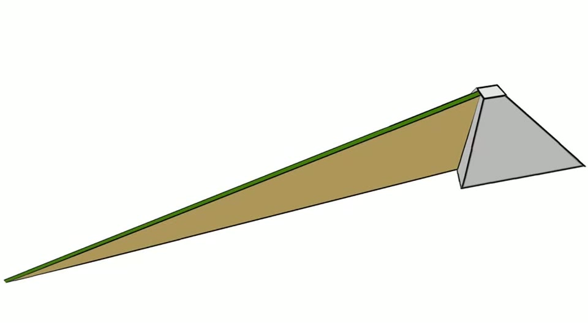
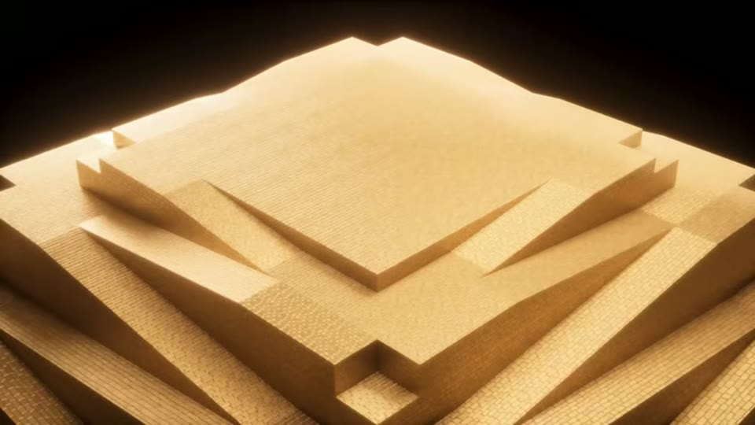

Curious Being
The Pyramid Theory That Solves Every Construction Mystery
Tina · 27 min · watch on YouTube · summarised 2026-08-23
The first two thirds of this video are the most useful survey of pyramid construction theories in the corpus: each accepted explanation stated properly, then tested against numbers, logistics and excavation results. The last third is her own hypothesis, which is unlike anything else in the field. The two halves are worth reading separately.
The accepted theories, and where each one breaks

The scale problem with the straight ramp: to hold a workable gradient it dwarfs the thing it is built to build.
The straight external ramp 01:20–02:40. To keep a gradient shallow enough to drag heavy loads — generally under 10° — a straight ramp would have to run over 2 km, and building it would take more material than the pyramid itself. Despite decades of excavation across the plateau, no trace has been found: no compacted earth, no retaining walls, no foundations.
The spiral ramp 02:40–03:40 solves the length problem and creates others. Workers on a narrow wrapping ramp cannot see the pyramid's edges, which makes maintaining the geometry very hard, and a single ramp serving both directions creates a traffic problem. Both external forms are now widely regarded as implausible for the upper third — the final 160 feet, where every theory struggles.
The internal ramp 03:40–06:00. Jean-Pierre Houdin's proposal: an external ramp for the lower third, and a spiral ramp about 6 ft wide at a 7% grade built inside the outer shell. Elegant, and seriously considered — until the Scan Pyramid Project used muon tomography and found a previously unknown 30 m void above the Grand Gallery and a 9 m corridor near the north face, but no internal spiral ramp. The practical objections stand as well: moving heavy stone two-directionally through unventilated 6 ft tunnels.

What the muon scans found, and what they did not: two voids, and no internal spiral ramp.

The 2026 proposal's starting point: an oversized rough stepped mass to be carved down into the finished pyramid.
The "unbuilding" proposal 06:00–09:40, new in January 2026: build an oversized rough stepped mass, then carve the pyramid out of it, recycling the removed stone into the second and third pyramids. Her objections are the best-argued section of the video:
- It amplifies the problem it solves. If we cannot explain lifting 2.3 million blocks, we certainly cannot explain lifting more stone even higher and then removing it.
- Petrie's survey is against it. The internal limestone courses are laid in uniform horizontal layers, consistently levelled, showing planned geometry from the first course. A mass roughed out and then sculpted would leave irregularly oriented and trimmed internal blocks.
- The casing stones are imported. The outer surface was white Tura limestone, quarried across the Nile, shipped, and fitted as individual blocks. Carving a pyramid down from a core would produce a surface of local Giza limestone. It was constructed, not carved.
- The recycling makes no sense. The Great Pyramid's base sits about 10 m lower than the second pyramid, so salvaged blocks would go uphill; the third is far away; and core limestone came from the bedrock underfoot, so there was nothing to save.
The hydraulic lift 09:48–11:30. A 2024 study identified features at the Step Pyramid of Djoser consistent with water regulation and treatment, which is offered as evidence that hydraulic technology was available. Her objections are physical: the pyramids are not waterproof — mortarless jointed limestone cannot hold pressure; Djoser stands 17–25 m above the flood terrace and Giza about 60 m above the Nile, higher than any natural water source; and a two-tonne stone block does not float, so the pressures involved would need containment nobody has evidence for.
The counterweight pulley 11:30–13:30, reading the Grand Gallery as a lifting machine with weights descending it. Her objections: the antechamber it would work through is about 5.6 × 2.1 × 3.6 m, which is very small for raising 70-tonne granite beams; the system sits in the lower pyramid, where lifting was never the problem; and if it worked, no other pyramid has a Grand Gallery or anything like one, which is hard to explain for an effective method.
Her summary 13:30–14:30 is honest about where this leaves things: either our understanding of Egyptian organisational and engineering capability is seriously incomplete, or some element of the method has been lost without trace.
The concrete hypothesis
She singles out Joseph Davidovits' proposal as deserving attention because it is the most testable 15:04–16:50: that the blocks were not quarried or lifted but cast in place from a limestone-based geopolymer.
Her account of the evidence is that multiple independent analyses — X-ray diffraction, electron microscopy, NMR spectroscopy, palaeomagnetic investigation and plasma torch testing — have found core and casing stones of several pyramids to have characteristics more consistent with a manufactured material than with quarried limestone, and that one study identified nanoscale silicon dioxide spheres in the matrix. She states plainly that Egyptology has not accepted these findings and also has not cleanly refuted them.
Her own hypothesis: the pyramid as mine waste containment
This is hers, first proposed in September 2021 16:51–19:40, and it is the reason the video exists.
The proposal: the Giza plateau was a large-scale mining operation run by a civilisation predating dynastic Egypt. Once the ore was extracted, the tailings — crushed rock, chemically contaminated debris — had to be immobilised. So they were cemented into blocks, stacked into a stable mass, and sealed permanently.
The modern analogue is exact and is her strongest support: mining operations today stabilise hazardous tailings by mixing them with binders and storing them in engineered containment — paste tailings and cemented waste rock fills — for chemical stabilisation, long-term containment and structural permanence.

The modern practice her hypothesis is built on: hazardous mine waste mixed with a binder and stacked as engineered containment.
What she says the hypothesis accounts for:
- The pyramids are 99.9% solid, as if the goal were to pack in as much locally sourced artificial material as possible.
- The internal passages are narrow and low, unsuited to human access or ritual, but consistent with drainage channels or monitoring access in a sealed containment.
- The mass in precise horizontal courses is structurally ideal for load-bearing stability over geological time.
- The plateau itself has large vertical shafts, traces of metal ores and underground caves.
The modern-methods comparison 19:40–21:00. If we built a Great Pyramid today we would not use ramps or haul 2.3 million blocks — we would pump concrete. Modern pumps move 100–200 m³ an hour vertically over more than 200 m; the pyramid stood 146.6 m. Its 2.6 million m³ is unexceptional against dam projects of 10–20 million m³. She estimates two to four years with modern methods.
Why blocks rather than a continuous pour 21:00–22:30, which is the obvious objection and she answers it with engineering: continuous pours create cold joints, planes of weakness where new concrete meets cured, and generate curing heat with gradients that crack a mass this size. Individually cast blocks avoid both, cure faster, are easier to place, and the small gaps act as expansion joints while staggered courses distribute load. Dry-stacked tailings facilities are built in phases for exactly these reasons.
Precision as a by-product 22:30–23:30. If blocks were cut and dressed individually, the pyramid's alignment, proportions, casing fit and subtle concave faces require thousands of independent cutting decisions with no accumulated error. If they were cast in reusable formwork, the precision is what a mould does.
What you can check yourself
- The ramp arithmetic — 10° gradient, 2 km length, more material than the pyramid — can be redone from the pyramid's dimensions in a few minutes.
- That no ramp has been excavated at Giza is a matter of published excavation record.
- The muon tomography results are published: a 30 m void above the Grand Gallery, a 9 m corridor near the north face, and no spiral ramp.
- Petrie's survey of the internal coursing is a published nineteenth-century record and the strongest evidence against the unbuilding proposal.
- That the casing stones are Tura limestone from across the Nile and the core is local Giza stone is standard, and settles whether the surface was carved or built.
- The relative heights of the first and second pyramids' bases are surveyed.
- The antechamber's dimensions can be checked against the claim that it housed a lifting mechanism for 70-tonne beams.
- The published geopolymer analyses exist and can be read, along with the responses to them. This is the testable claim, and the entry stands or falls on it.
- Cemented paste tailings are a real and documented industrial practice.
- Cold joints and thermal cracking in mass concrete are standard civil engineering.
What the video does not settle
- The survey and the hypothesis are held to different standards. Each accepted theory is tested against numbers, excavation and logistics; her own is assessed by how much it explains. Nothing in it is measured, and no prediction is offered that would fail if it were wrong.
- There is no ore. The hypothesis requires a mining operation large enough to generate 2.6 million cubic metres of tailings, which implies a comparable volume of extracted ore, a processing industry and a market. None is identified.
- The blocks would be testable and are not tested. If the pyramid is cemented mine waste, the blocks should contain metallurgical residues, unusual trace elements or ore minerals foreign to Giza limestone. That is a decisive analysis and it is not reported.
- The geopolymer analyses are described but not cited. Which studies, by whom, on which samples, is not stated in this video — and this is the evidential foundation of everything that follows. They are named and shown in Pyramid Stones: The Scientific Evidence They're Hiding.
- Explaining several things at once is not proof. She presents the hypothesis as strong because it resolves multiple anomalies in one framework, which is a real virtue in a theory and is not the same as evidence for it.
- The modern-methods comparison shows what we could do, not what they did. That concrete pumping would build a pyramid easily is true and says nothing about the fourth millennium BC.
- Her own objection is not applied to herself. In her chemical plant video she faults every functional theory for explaining the internal openings while ignoring the shape and the solidity. The waste-containment hypothesis does address the solidity — but not why containment should be a pyramid rather than any other stable mass.
- The dating is unargued. A civilisation predating dynastic Egypt is asserted rather than established, and nothing here bears on when the structures were built.
See also
Pyramid Stones: The Scientific Evidence They're Hiding — the evidential foundation this video describes and does not cite, supplied in full.
The Pyramid Chemical Plant Theory: Does the Science Actually Hold Up? — her demolition of a rival functional theory, and the source of the test her own hypothesis has to pass.
Giza's Precise Granite Blocks — the casting argument applied to Giza's granite, where she notes no material study exists.
What we have not checked
- The theory attributions are as spoken: Jean-Pierre Houdin for the internal ramp and Joseph Davidovits for the geopolymer hypothesis. Both come through the captions cleanly and match the standard attributions, but neither has been verified against a source here.
- The Scan Pyramid Project results — a 30 m void above the Grand Gallery and a 9 m corridor near the north face — are published findings, but the specific papers have not been located.
- The January 2026 "unbuilding" proposal is not attributed to anyone in the video, and has not been identified. Its authors' own account has not been read, so her summary of it is the only version this entry has.
- The 2024 study on water regulation at Djoser is described as published on ResearchGate and is not otherwise identified.
- The geopolymer analyses — X-ray diffraction, electron microscopy, NMR, palaeomagnetic testing, plasma torch testing, and the nanoscale silica spheres — are not individually cited here. All of them except the plasma torch work are identified in Pyramid Stones: The Scientific Evidence They're Hiding. None of the papers has been read.
- Figures given and not traced: 2.3 million blocks, 2.6 million m³, 146.6 m height, 0.014% and 99.9% solidity, the antechamber's dimensions, the 10 m difference between pyramid bases, and the 100–200 m³/hour concrete pumping rate.
- This is her 100th long video and reads as a summing-up of positions argued across earlier ones; several claims are carried in from those videos rather than made here.